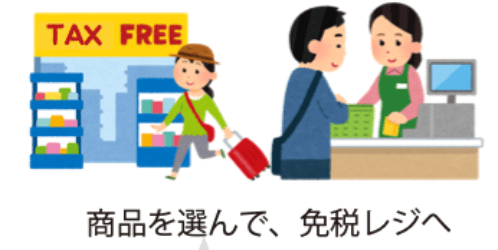
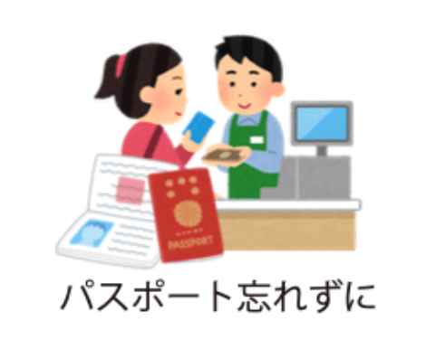
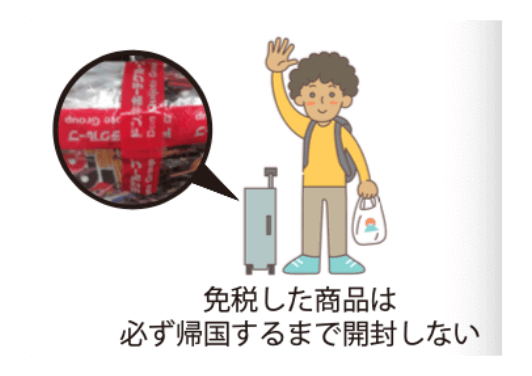
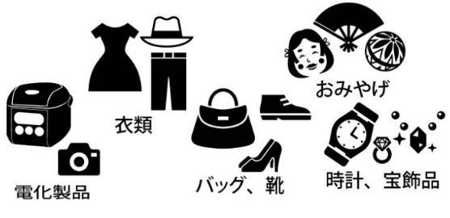

SOFA]スタンフ
(米軍構成員等)
ドン・キホーテは免税店です



注意事項
免税は国のル一ルで、免税対象者、免税対象物品、金額等の制限を設けています。免税では事業目的、販売目的ということが明らかな場合は、免税対象外となります。詳しくは、お店スタッフ八お尋ね下さい。
免税ルール詳細

非居住者のうち「外国籍」を有する方の場合
本邦入国後 6 ヶ月未満であることを 旅券 等で 確認出来ること(外交・公用・米軍を除く)。
本邦入国後 6 ヶ月未満であることを 旅券 等で 確認出来ること(外交・公用・米軍を除く)。
在留資格
旅券等の種類
免税可否
短期滞在
外交
公用
外交
公用
旅券
上記以外
旅券
入国の証印等
旅券等の種類
免税可否
寄港地上陸の許可
の証印
の証印
通過上陸の許可の
証印
証印
旅券
船舶観光上陸
許可書
許可書
船舶観光上陸
許可書
許可書
乘員上陸許可書
乘員上陸許可書
緊急上陸許可書
緊急上陸許可書
遭難による上陸
許可書
許可書
遭難による上
陸許可書
陸許可書
非居住者のうち「日本国籍」を有する 方の場合
※直近の入国(帰国)日の6ヵ月前の日以降に作成された「戸籍の附票の写し」または 「在留証明」により確認出来ることが必要です。
※直近の入国(帰国)日の6ヵ月前の日以降に作成された「戸籍の附票の写し」または 「在留証明」により確認出来ることが必要です。
要件
免税可否
国内以外の地域に引き続き2年以上住所 又は居所を有する者
国内以外の地域に引き続き2年以上住所 又は居所を有する者
2年以上外国に滞在する目的で出国し、 その滞在期間が2年未満である者

通常生活の用に供される物品(一般物品、消耗品)であること。
※事業用又は販売用として購入することが明らかな場合は、免税販売対象外になります。
一般物品
1人の非居住者に対して同じ店舗における1日の販売合計額が5千円以上。

消耗品
1日の販売合計額が5千円以上、50万円以下の範囲内であること。
日本国内で消費されないように指定された方法による包装がされていること